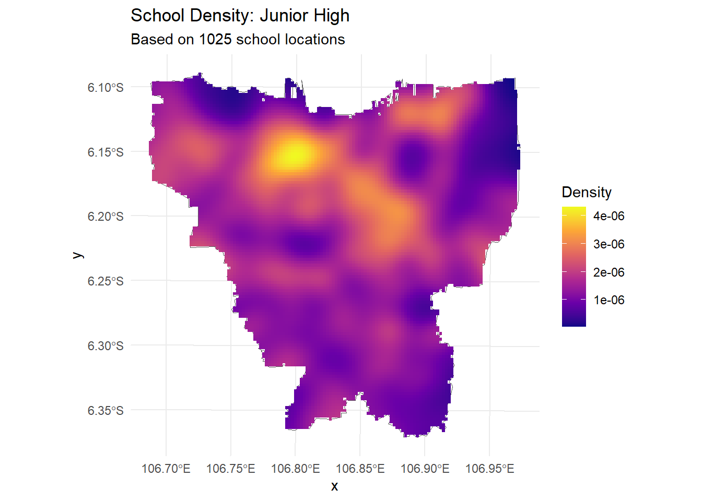
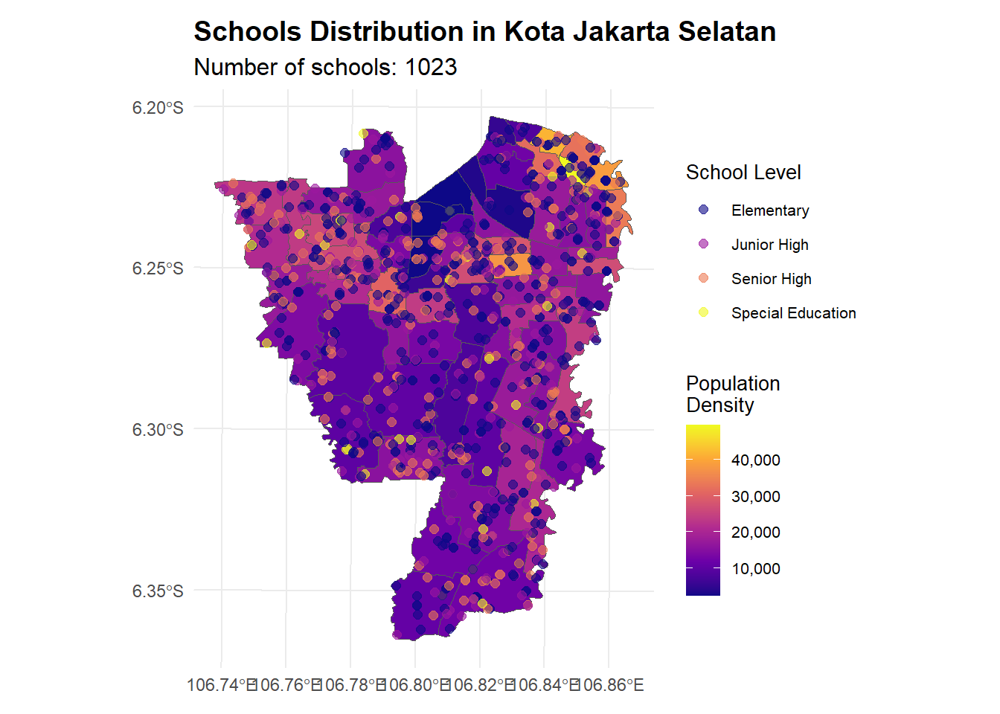

pacman::p_load(sf, tidyverse, knitr, viridis, patchwork, gridExtra, kableExtra, sfdep, tmap, tmaptools, patchwork, scales, spdep, ggrepel, spatstat)Take Home Exercise 3 (Corrected)
1.0 Spatial Distribution Analysis of Educational Facilities in Jakarta
1.1 Overview
Jakarta, the capital of Indonesia, is a bustling metropolis with a diverse population and a complex urban landscape. The city’s educational infrastructure plays a crucial role in shaping the future of its residents. In this analysis, we will explore the spatial distribution of educational facilities across Jakarta to understand the accessibility and equity of educational resources.
1.2 Scope and Objectives
Our project encompasses three primary areas of investigation.
- Spatial Points Patterns Analysis of Distribution of Schools:
- Examination of school distribution patterns across Jakarta
- Identification of areas with significant clustering or dispersion
- Assessment of spatial relationships between different types of educational facilities
- LISA and Hot-spot, Cold-spot Analysis
- Identification of Local Indicators of Spatial Association (LISA) clusters
- Detection of hot-spots and cold-spots of schools
- Investigation of spatial autocorrelation in the distribution of schools
- Geographically Weighted Regression Modeling
- Exploration of relationships between education levels and school availability and accessibility
- Assessment of spatial variations across different districts
- Investigation of socioeconomic factors influencing school distribution patterns
This research aims to provide insights into the spatial dynamics of educational facilities in Jakarta and inform policy decisions to enhance educational equity and access. By combining spatial analysis techniques with statistical modeling, we can uncover hidden patterns and relationships that are crucial for effective urban planning and resource allocation.
1.3 Indonesia’s Education System
Indonesia’s education system is structured into several stages:
Primary Education
- Elementary School (SD): Compulsory education for children aged 7-12 years
- Special Elementary School (SDLB): Schools for children with special needs
Secondary Education
- Junior High School (SMP): Follows elementary school and is for students aged 13-15 years
- Special Junior High School (SMPLB): Schools for students with special needs
High School Education
- Senior High School (SMA): Follows junior high school and is for students aged 16-18 years
- Vocational High School (SMK): Focuses on vocational training and skills development
- Special Senior High School (SMLB): Schools for students with special needs
Special Education
- Special Education (SLB): Schools for children with disabilities
For the purpose of this analysis, we have combined the types of schools into four main types. Note that Junior High Schools may also be interchangeably referred to as Secondary Schools. Senior High Schools may also be referred to as High Schools.
We decided to add SMLB into High Schools instead of Special Education Schools because it is more similar to SMA and SMK in terms of educational level.
- Elementary Schools: Includes SD and SDLB
- Junior High Schools: Includes SMP and SMPLB
- Senior High Schools: Includes SMA, SMK, and SMLB
- Special Education Schools: Includes SLB
1.4 Analysis Methodology
The spatial points patterns analysis follows a multi-scale approach:
- Provincial Level Analysis:
- Initial exploration of school distribution patterns across Jakarta
- Global clustering analysis
- Population density correlation
- City Level Analysis:
- Local clustering patterns
- School type interactions
- Public-private school dynamics
- Statistical Methods:
- Kernel Density Estimation
- Nearest Neighbour Analysis
- Quadrat Analysis
- Cross-K Function Analysis
- Ripley’s K Function and L Function Analysis
1.4 Datasets
This study utilizes three primary datasets.
- Indonesia Schools Dataset:
- Source: Kaggle - Indonesia Schools Dataset
- This datasets contains information about schools across Indonesia, including location, type, and educational stage.
- Indonesia Administrative Boundaries:
- Source: Indonesia - Subnational Administrative Boundaries
- We selected the ADM2 level boundaries for provincial level analysis.
- Subdistrict Data:
- Source: Indonesia Geospasial
- This dataset provides detailed subdistrict boundaries for Jakarta, and contains population aggregated by subdistrict.
2.0 Data Preprocessing
indo_schools_kaggle <- read_csv("data/aspatial/complete_data.csv")Rows: 215371 Columns: 11
── Column specification ────────────────────────────────────────────────────────
Delimiter: ","
chr (6): province_name, city_name, district_name, school_name, stage, status
dbl (5): lat, long, province_area, total_population, total_education_age_pop...
ℹ Use `spec()` to retrieve the full column specification for this data.
ℹ Specify the column types or set `show_col_types = FALSE` to quiet this message.After loading the data for Indonesia schools, we will filter and preprocess the data to focus on Jakarta schools and clean the administrative boundaries data. We will exclude Jakarta’s Thousand Islands (Kab. Kepulauan Seribu) since they are primarily resort islands with limited educational facilities.
jakarta_schools <- indo_schools_kaggle %>%
filter(province_name == "DKI JAKARTA",
city_name != "Kab. Kepulauan Seribu") %>%
filter(!is.na(long) & !is.na(lat)) %>%
st_as_sf(coords = c("long", "lat"), crs = 4326) %>%
mutate(
school_level = case_when(
stage %in% c("SD", "SDLB") ~ "Elementary",
stage %in% c("SMP", "SMPLB") ~ "Junior High",
stage %in% c("SMA", "SMK", "SMLB") ~ "Senior High",
TRUE ~ "Special Education"
),
school_type = if_else(status == "N", "Public", "Private")
)head(jakarta_schools)Simple feature collection with 6 features and 11 fields
Geometry type: POINT
Dimension: XY
Bounding box: xmin: 106.8139 ymin: -6.1992 xmax: 106.8642 ymax: -6.1462
Geodetic CRS: WGS 84
# A tibble: 6 × 12
province_name city_name district_name school_name stage status province_area
<chr> <chr> <chr> <chr> <chr> <chr> <dbl>
1 DKI JAKARTA Kota Jakar… Kec. Tanah A… SD NEGERI … SD N 664
2 DKI JAKARTA Kota Jakar… Kec. Senen SDN Kenari… SD N 664
3 DKI JAKARTA Kota Jakar… Kec. Johar B… SD NEGERI … SD N 664
4 DKI JAKARTA Kota Jakar… Kec. Menteng SMAS PSKD … SMA S 664
5 DKI JAKARTA Kota Jakar… Kec. Sawah B… SMKS STRAD… SMK S 664
6 DKI JAKARTA Kota Jakar… Kec. Cempaka… SDN Cempak… SD N 664
# ℹ 5 more variables: total_population <dbl>,
# total_education_age_population <dbl>, geometry <POINT [°]>,
# school_level <chr>, school_type <chr>Next, we load the administrative boundaries data for Jakarta and filter the relevant districts for our analysis.
adm2 <- st_read("data/geospatial", layer = "geoBoundaries-IDN-ADM2_simplified") %>%
filter(shapeName %in% c(
"Kota Jakarta Barat", "Kota Jakarta Pusat",
"Kota Jakarta Selatan", "Kota Jakarta Timur",
"Kota Jakarta Utara"
))Reading layer `geoBoundaries-IDN-ADM2_simplified' from data source
`C:\Users\yeoba\Desktop\bjyeo\IS415-GeospatialAnalytics\TakehomeEx\THE03C\data\geospatial'
using driver `ESRI Shapefile'
Simple feature collection with 519 features and 5 fields
Geometry type: MULTIPOLYGON
Dimension: XY
Bounding box: xmin: 95.01115 ymin: -11.00762 xmax: 141.0194 ymax: 6.07693
Geodetic CRS: WGS 84Our last dataset, the subdistrict data, provides detailed boundaries for Jakarta’s subdistricts. We will use this data to analyze population density and other demographic factors. The original dataset has column names in Indonesian, so we will need to rename them for consistency.
batas <- st_read("data/geospatial", layer = "BATAS_DESA_DESEMBER_2019_DUKCAPIL_DKI_JAKARTA") %>%
select(OBJECT_ID, PROVINSI, KAB_KOTA, KECAMATAN, DESA_KELUR,
JUMLAH_PEN, JUMLAH_KK, LUAS_WILAY, KEPADATAN, geometry) %>%
rename(
province = PROVINSI,
city = KAB_KOTA,
district = KECAMATAN,
subdistrict = DESA_KELUR,
population = JUMLAH_PEN,
total_families = JUMLAH_KK,
area_size = LUAS_WILAY,
popn_density = KEPADATAN
) %>%
filter(!is.na(city) & city != "KEPULAUAN SERIBU") %>%
mutate(city = case_when(
city == "JAKARTA BARAT" ~ "Kota Jakarta Barat",
city == "JAKARTA PUSAT" ~ "Kota Jakarta Pusat",
city == "JAKARTA SELATAN" ~ "Kota Jakarta Selatan",
city == "JAKARTA TIMUR" ~ "Kota Jakarta Timur",
city == "JAKARTA UTARA" ~ "Kota Jakarta Utara",
TRUE ~ city
))Reading layer `BATAS_DESA_DESEMBER_2019_DUKCAPIL_DKI_JAKARTA' from data source
`C:\Users\yeoba\Desktop\bjyeo\IS415-GeospatialAnalytics\TakehomeEx\THE03C\data\geospatial'
using driver `ESRI Shapefile'
Simple feature collection with 269 features and 161 fields
Geometry type: MULTIPOLYGON
Dimension: XY
Bounding box: xmin: 106.3831 ymin: -6.370815 xmax: 106.9728 ymax: -5.184322
Geodetic CRS: WGS 84head(batas)Simple feature collection with 6 features and 9 fields
Geometry type: MULTIPOLYGON
Dimension: XY
Bounding box: xmin: 106.8105 ymin: -6.17575 xmax: 106.8711 ymax: -6.141043
Geodetic CRS: WGS 84
OBJECT_ID province city district subdistrict population
1 25477 DKI JAKARTA Kota Jakarta Barat TAMAN SARI KEAGUNGAN 21609
2 25478 DKI JAKARTA Kota Jakarta Barat TAMAN SARI GLODOK 9069
3 25397 DKI JAKARTA Kota Jakarta Pusat KEMAYORAN HARAPAN MULIA 29085
4 25400 DKI JAKARTA Kota Jakarta Pusat KEMAYORAN CEMPAKA BARU 41913
5 25390 DKI JAKARTA Kota Jakarta Pusat SAWAH BESAR PASAR BARU 15793
6 25391 DKI JAKARTA Kota Jakarta Pusat SAWAH BESAR KARANG ANYAR 33383
total_families area_size popn_density geometry
1 7255 0.36 60504 MULTIPOLYGON (((106.8164 -6...
2 3273 0.37 24527 MULTIPOLYGON (((106.8148 -6...
3 9217 0.53 54465 MULTIPOLYGON (((106.8576 -6...
4 13766 0.97 42993 MULTIPOLYGON (((106.8631 -6...
5 5599 1.76 8971 MULTIPOLYGON (((106.8369 -6...
6 11276 0.47 71628 MULTIPOLYGON (((106.8316 -6...The district names in the batas dataset is cleaned to ensure consistency.
district_mapping <- c(
"TAMAN SARI" = "Kec. Taman Sari",
"KEMAYORAN" = "Kec. Kemayoran",
"SAWAH BESAR" = "Kec. Sawah Besar",
"GAMBIR" = "Kec. Gambir",
"SENEN" = "Kec. Senen",
"CEMPAKA PUTIH" = "Kec. Cempaka Putih",
"MENTENG" = "Kec. Menteng",
"TANAH ABANG" = "Kec. Tanah Abang",
"JOHAR BARU" = "Kec. Johar Baru",
"KOJA" = "Kec. Koja",
"PENJARINGAN" = "Kec. Penjaringan",
"TANJUNG PRIOK" = "Kec. Tanjung Priok",
"CILINCING" = "Kec. Cilincing",
"GROGOL PETAMBURAN" = "Kec. Grogol Petamburan",
"PADEMANGAN" = "Kec. Pademangan",
"KELAPA GADING" = "Kec. Kelapa Gading",
"CENGKARENG" = "Kec. Cengkareng",
"TAMBORA" = "Kec. Tambora",
"KEBON JERUK" = "Kec. Kebon Jeruk",
"KALIDERES" = "Kec. Kali Deres",
"PAL MERAH" = "Kec. Palmerah",
"JATINEGARA" = "Kec. Jatinegara",
"KEMBANGAN" = "Kec. Kembangan",
"TEBET" = "Kec. Tebet",
"SETIABUDI" = "Kec. Setia Budi",
"MAMPANG PRAPATAN" = "Kec. Mampang Prapatan",
"PASAR MINGGU" = "Kec. Pasar Minggu",
"KEBAYORAN LAMA" = "Kec. Kebayoran Lama",
"KEBAYORAN BARU" = "Kec. Kebayoran Baru",
"CILANDAK" = "Kec. Cilandak",
"PESANGGRAHAN" = "Kec. Pesanggrahan",
"PANCORAN" = "Kec. Pancoran",
"JAGAKARSA" = "Kec. Jagakarsa",
"MATRAMAN" = "Kec. Matraman",
"PULOGADUNG" = "Kec. Pulo Gadung",
"KRAMATJATI" = "Kec. Kramat Jati",
"PASAR REBO" = "Kec. Pasar Rebo",
"DUREN SAWIT" = "Kec. Duren Sawit",
"MAKASAR" = "Kec. Makasar",
"CIRACAS" = "Kec. Ciracas",
"CIPAYUNG" = "Kec. Cipayung",
"CAKUNG" = "Kec. Cakung"
)
batas <- batas %>%
mutate(district = district_mapping[district])3.0 Exploratory Data Analysis (Provincial Level)
Before diving into detailed spatial analysis, we will conduct an initial round of analysis at the provincial level to understand the overall distribution of schools across Jakarta.
3.1 Overall Distribution Patterns
ggplot(data = jakarta_schools) +
geom_bar(aes(x = city_name, fill = city_name)) +
scale_fill_viridis_d(option = "plasma") +
theme_minimal() +
theme(
axis.text.x = element_text(angle = 45, hjust = 1),
plot.title = element_text(size = 12, face = "bold"),
legend.position = "none"
) +
labs(
title = "Distribution of Schools Across Jakarta",
x = "City",
y = "Number of Schools"
)Key Observations:
- East Jakarta has the highest concentration of schools (approximately 1200+), followed by West Jakarta
- The distribution aligns broadly with population density but shows some notable mismatches
- School density follows an east-west corridor pattern with lower density in the north and south
3.2 School Level Distribution
ggplot(data = jakarta_schools) +
geom_bar(aes(x = city_name, fill = school_level)) +
scale_fill_viridis_d(option = "plasma") +
theme_minimal() +
theme(
axis.text.x = element_text(angle = 45, hjust = 1),
plot.title = element_text(size = 12, face = "bold")
) +
labs(
title = "Distribution of School Levels Across Jakarta",
x = "City",
y = "Number of Schools",
fill = "School Level"
)
Key Observations:
- Across all municipalities, elementary schools are the most common
- There is a relatively consistent proportion of Junior and Senior High Schools
- Special Education schools are less common but present in all municipalities
- While total numbers differ, the proportional distribution of school levels remains fairly consistent across cities, suggesting planned distribution rather than random clustering
3.3 Overall School Density
ggplot() +
geom_sf(data = adm2, aes(fill = lengths(st_intersects(adm2, jakarta_schools)))) +
scale_fill_viridis_c(option = "plasma") +
theme_minimal() +
labs(
title = "School Density Across Jakarta",
fill = "Number of\nSchools"
)
3.4 Population Density
ggplot() +
geom_sf(data = batas, aes(fill = popn_density)) +
scale_fill_viridis_c(
option = "plasma",
labels = scales::comma_format()
) +
theme_minimal() +
labs(
title = "Population Density in Jakarta",
fill = "Population\nDensity\n(per km²)"
)
Key Observations:
- The density map reveals high population clusters in central Jakarta (yellow/orange areas)
- There is an interesting mismatch with school density in some areas
- Several high-density pockets are scattered across Jakarta
3.5 Overall Summary
- Our preliminary EDA at the provincial level is too macro to provide detailed insights, but necessary to understand the overall distribution of schools in Jakarta
- Certain patterns of school and population concentration emerge, but we will need to confirm this with KDE and statistical tests
- We still cannot determine if the school distribution matches population needs
4.0 Kernel Density Estimation (Provincial Level)
To analyze the spatial distribution of schools in Jakarta, we will use Kernel Density Estimation (KDE) to identify clustering patterns and hotspots. We will conduct KDE analysis at the provincial level and then drill down to individual cities to understand local variations.
4.1 Provincial KDE
# Convert to UTM projection for proper distance calculations
jakarta_schools_utm <- st_transform(jakarta_schools, 32748)
adm2_utm <- st_transform(adm2, 32748)proper_jitter <- function(sf_points, window) {
# Convert points to spatial points pattern
jittered_points <- st_jitter(sf_points, amount = 1)
coords <- st_coordinates(jittered_points)
# Filter points within window
inside <- inside.owin(x = coords[,1], y = coords[,2], w = window)
if(sum(inside) > 0) {
valid_coords <- coords[inside,]
# Create ppp object
points_ppp <- ppp(
x = valid_coords[,1],
y = valid_coords[,2],
window = window
)
return(list(
points_ppp = points_ppp,
inside_count = sum(inside)
))
} else {
stop("No points fall within the window after jittering")
}
}kde_analysis <- function(jakarta_schools_utm, adm2_utm) {
# Create window
window <- as.owin(st_union(adm2_utm))
# Get point pattern
jittered_result <- proper_jitter(jakarta_schools_utm, window)
points <- jittered_result$points_ppp
inside_count <- jittered_result$inside_count
# Verify points exist
if(points$n > 0) {
# Calculate KDE
kde <- density.ppp(points,
sigma = bw.diggle(points),
edge = TRUE)
kde_df <- as.data.frame(kde)
return(list(
kde_df = kde_df,
inside_count = inside_count
))
} else {
stop("No valid points for KDE analysis")
}
}kde_result <- kde_analysis(jakarta_schools_utm, adm2_utm)
ggplot() +
geom_sf(data = adm2_utm, fill = "transparent") +
geom_tile(data = kde_result$kde_df, aes(x = x, y = y, fill = value)) +
scale_fill_viridis_c(option = "plasma") +
theme_minimal() +
labs(
title = "Kernel Density Estimation of All Schools",
subtitle = paste0("Based on ", kde_result$inside_count, " school locations"),
fill = "Density"
)Key Observations:
- The overall KDE map shows spatial clustering with several high-density hotspots
- The strongest concentration is in North-Central Jakarta (around 6.15S)
- Secondary clusters appear in the eastern and western regions
- Southern areas generally show lower density
- This patterns strongly suggests rejecting the null hypothesis of random distribution
4.2 KDE by School Level
# Function for KDE by school level
kde_by_level <- function(jakarta_schools_utm, adm2_utm) {
window <- as.owin(st_union(adm2_utm))
kde_plots <- list()
for(level in unique(jakarta_schools_utm$school_level)) {
# Subset schools by level
schools_subset <- jakarta_schools_utm[jakarta_schools_utm$school_level == level,]
# Jitter points
jittered_result <- proper_jitter(schools_subset, window)
points_ppp <- jittered_result$points_ppp
# Calculate KDE
kde_level <- density.ppp(points_ppp,
sigma = bw.diggle(points_ppp),
edge = TRUE)
kde_df <- as.data.frame(kde_level)
# Create plot
kde_plots[[level]] <- ggplot() +
geom_sf(data = adm2_utm, fill = "transparent") +
geom_tile(data = kde_df, aes(x = x, y = y, fill = value)) +
scale_fill_viridis_c(option = "plasma") +
theme_minimal() +
labs(
title = paste("School Density:", level),
subtitle = paste0("Based on ", jittered_result$inside_count, " school locations"),
fill = "Density"
)
}
return(kde_plots)
}
walk(kde_by_level(jakarta_schools_utm, adm2_utm), print)
Key Observations:
- The KDE plots reveal distinct non-random spatial patterns in school distribution
- The most intense clustering appears in the North-Central region across all school types
- Density patterns vary by school level. Elementary schools show more dispersed, localized hotspots. Secondary schools display stronger clustering and special education schools show unique clustering patterns in central and southwestern regions.
4.3 Quadrat Analysis
Spatial Distribution
jittered_schools <- st_jitter(jakarta_schools_utm, amount = 1)
coords <- st_coordinates(jittered_schools)
marks <- jittered_schools$school_level
window <- as.owin(st_union(adm2_utm))
# Filter points within window
inside <- inside.owin(x = coords[,1], y = coords[,2], w = window)
valid_coords <- coords[inside,]
valid_marks <- marks[inside]
print(paste("Number of valid coordinates:", nrow(valid_coords)))[1] "Number of valid coordinates: 4734"print(paste("Number of valid marks:", length(valid_marks)))[1] "Number of valid marks: 4734"quadrat_points <- ppp(
x = valid_coords[,1],
y = valid_coords[,2],
window = window,
marks = factor(valid_marks)
)
q <- quadratcount(quadrat_points, nx = 6, ny = 6)
ggplot() +
geom_sf(data = adm2_utm, fill = "transparent") +
stat_density2d(
data = as.data.frame(valid_coords),
aes(x = X, y = Y, fill = after_stat(level)),
geom = "polygon",
alpha = 0.5,
contour = TRUE
) +
geom_point(
data = data.frame(
X = valid_coords[,1],
Y = valid_coords[,2],
Level = valid_marks
),
aes(x = X, y = Y, color = Level),
alpha = 0.6,
size = 2
) +
scale_fill_viridis_c(option = "plasma", name = "Density") +
scale_color_viridis_d(option = "plasma", name = "School Level") +
theme_minimal() +
labs(
title = "Quadrat Analysis of Schools in Jakarta",
subtitle = paste("Based on", nrow(valid_coords), " school locations")
)Key Observations:
- The quadrat analysis confirms the non-random distribution of schools in Jakarta
- Elementary schools show widest spatial coverage, secondary schools tend to be clustered together and special education facilities are sparsely distributed
- Higher density areas correspond to areas with multiple school types
Statistical Analysis
# Chi-square test
q_test <- quadrat.test(quadrat_points)
print("Quadrat Test Results:")[1] "Quadrat Test Results:"print(q_test)
Chi-squared test of CSR using quadrat counts
data: quadrat_points
X2 = 513.45, df = 22, p-value < 2.2e-16
alternative hypothesis: two.sided
Quadrats: 23 tiles (irregular windows)From the Chi-squared test, the extremely low p-value < 2.2e-16 strongly rejects the null hypothesis of Complete Spatial Randomness (CSR). The high chi-squared value of 513.45 indicates substantial deviation from expected frequencies. The results statistically confirm the visual clustering patterns.
Frequency Analysis
quadrat_summary <- data.frame(
observed = as.vector(q),
expected = mean(as.vector(q)),
quadrat = 1:length(as.vector(q))
)
ggplot(quadrat_summary) +
geom_point(aes(x = quadrat, y = observed), color = "blue", alpha = 0.6) +
geom_hline(yintercept = mean(quadrat_summary$expected),
linetype = "dashed", color = "red") +
theme_minimal() +
labs(
title = "Observed vs Expected Quadrat Frequencies",
x = "Quadrat Number",
y = "Frequency",
caption = "Red line indicates expected frequency under CSR"
)Key Observations:
- There is large variation in observed frequencies across quadrats
- Most quadrats show frequencies significantly different from expected (red line)
- Several quadrats show very high frequencies (>300 schools). Some quadrats show very low frequencies (<100 schools)
- This pattern suggests strong deviation from CSR
5.0 Exploratory Data Analysis (City Level)
To gain a more granular understanding of school distribution patterns, we will conduct a detailed analysis at the city level. By examining each city’s school network, we can identify local variations, assess the distribution of public vs private schools, and analyze nearest neighbor relationships.
5.1 School Distribution by City
# Create individual maps for each city
batas_utm <- st_transform(batas, 32748)
city_maps <- list()
for(city in unique(batas$city)) {
city_boundary <- batas_utm[batas_utm$city == city,]
city_schools <- jakarta_schools_utm[st_intersects(jakarta_schools_utm,
st_union(city_boundary)) %>%
lengths > 0,]
city_maps[[city]] <- ggplot() +
geom_sf(data = city_boundary,
aes(fill = popn_density)) +
geom_sf(data = city_schools,
aes(color = school_level),
size = 2,
alpha = 0.6) +
scale_fill_viridis_c(
option = "plasma",
name = "Population\nDensity",
labels = scales::comma_format()
) +
scale_color_viridis_d(
option = "plasma",
name = "School Level"
) +
theme_minimal() +
theme(
plot.title = element_text(size = 14, face = "bold"),
plot.subtitle = element_text(size = 12),
legend.title = element_text(size = 10),
legend.text = element_text(size = 8),
plot.margin = margin(10, 10, 10, 10)
) +
labs(
title = paste("Schools Distribution in", city),
subtitle = paste("Number of schools:", nrow(city_schools))
)
}
# Display all maps
walk(names(city_maps), function(city) {
print(city_maps[[city]])
})


Key Observations
- Jakarta Timur: Most extensive school network with even distribution across the region. There is strong correlation between population density and school locations. Notable clustering in central-north areas where population density reaches 40,000-60,000. Special education facilities well-distributed compared to other regions
- Jakarta Barat: Clear north-east educational corridor, dense clustering in eastern regions. Population density hotspots show good school coverage. Relatively even distribution of school levels.
- Jakarta Selatan: More dispersed distribution pattern, lower population density, higher proportion of senior high schools. Educational clusters observed in northern districts. Overall, good balance between school types and population needs.
- Jakarta Utara: Unique coastal-inland distribution pattern. Strong east-west variation in school density. Population density clusters in central areas. Limited special education facilities, clear correlation between major roads and school locations.
- Jakarta Pusat: Highest concentration of schools per unit area, intense clustering in eastern districts. Strong alignment with high population density. Notable educational complexes, since there are multiple school levels in close proximity. However, limited coverage in western sectors.
5.2 Public School Ratio by City
public_ratio <- jakarta_schools_utm %>%
group_by(city_name) %>%
summarise(
total_schools = n(),
public_schools = sum(school_type == "Public"),
public_ratio = public_schools / total_schools,
.groups = "drop"
)
ggplot(public_ratio) +
geom_bar(aes(x = reorder(city_name, public_ratio),
y = public_ratio,
fill = city_name),
stat = "identity") +
scale_fill_viridis_d(option = "plasma") +
theme_minimal() +
theme(
axis.text.x = element_text(angle = 45, hjust = 1),
legend.position = "none",
plot.title = element_text(size = 14, face = "bold"),
plot.subtitle = element_text(size = 12)
) +
labs(
title = "Public School Ratio by City",
subtitle = "Proportion of public schools to total schools",
x = "City",
y = "Proportion of Public Schools"
)Key Observations:
- The public school ratio varies significantly across cities
- The highest ratios is in Jakarta Selatan, which is surprisingly since South Jakarta has the third highest population in Jakarta
- This suggests an uneven distribution of public education resources
5.3 Nearest Neighbour Analysis
nn_analysis <- list()
for(city in unique(jakarta_schools_utm$city_name)) {
# Get schools for this city
city_schools <- jakarta_schools_utm[jakarta_schools_utm$city_name == city,]
city_boundary <- adm2_utm[adm2_utm$shapeName == city,]
city_window <- as.owin(st_union(city_boundary))
# Jitter points properly
jittered_result <- proper_jitter(city_schools, city_window)
points_ppp <- jittered_result$points_ppp
# Store results
nn_analysis[[city]] <- data.frame(
city = city,
observed_mean_dist = mean(nndist(points_ppp)),
n_points = npoints(points_ppp),
area = area.owin(city_window),
expected_mean_dist = 1/(2*sqrt(npoints(points_ppp)/area.owin(city_window))),
stringsAsFactors = FALSE
)
}
nn_df <- bind_rows(nn_analysis) %>%
mutate(R = observed_mean_dist/expected_mean_dist)nn_df %>%
select(city, observed_mean_dist, n_points, expected_mean_dist, R) %>%
arrange(R) %>%
kable("html") %>%
kable_styling("striped", full_width = FALSE)ggplot(nn_df) +
geom_bar(aes(x = reorder(city, R), y = R, fill = city),
stat = "identity") +
geom_hline(yintercept = 1, linetype = "dashed", color = "red") +
scale_fill_viridis_d(option = "plasma") +
theme_minimal() +
theme(
axis.text.x = element_text(angle = 45, hjust = 1),
legend.position = "none"
) +
labs(
title = "Nearest Neighbor Analysis by City",
subtitle = "R < 1 indicates clustering, R > 1 indicates dispersion",
x = "City",
y = "R Statistic"
)ggplot(nn_df) +
geom_segment(aes(x = city, xend = city,
y = expected_mean_dist, yend = observed_mean_dist),
color = "gray50") +
geom_point(aes(x = city, y = expected_mean_dist), color = "blue", size = 3) +
geom_point(aes(x = city, y = observed_mean_dist), color = "red", size = 3) +
theme_minimal() +
theme(
axis.text.x = element_text(angle = 45, hjust = 1)
) +
labs(
title = "Expected vs Observed Mean Nearest Neighbor Distances",
subtitle = "Blue: Expected, Red: Observed",
x = "City",
y = "Distance (meters)"
)Key Observations:
- All cities show an R-value < 1 confirming significant clustering
- The strongest clustering is in Jakarta Pusat (0.48) and most dispersed in Jakarta Barat (0.67)
- All cities show observed distances significantly lower than expected, confirming non-random distribution
5.4 Cross K Function Analysis
Public vs Private Schools
# Enhanced Cross K Analysis of Public vs Private Schools by City
cross_k_status <- list()
for(city in unique(jakarta_schools_utm$city_name)) {
# Get schools for this city
city_schools <- jakarta_schools_utm[jakarta_schools_utm$city_name == city,]
city_boundary <- adm2_utm[adm2_utm$shapeName == city,]
city_window <- as.owin(st_union(city_boundary))
# Separate public and private schools
public_schools <- city_schools[city_schools$school_type == "Public",]
private_schools <- city_schools[city_schools$school_type == "Private",]
# Add jitter to coordinates
public_coords <- st_coordinates(public_schools)
private_coords <- st_coordinates(private_schools)
# Filter points within window
public_inside <- inside.owin(x = public_coords[,1], y = public_coords[,2], w = city_window)
private_inside <- inside.owin(x = private_coords[,1], y = private_coords[,2], w = city_window)
public_valid <- public_coords[public_inside,]
private_valid <- private_coords[private_inside,]
# Create point pattern if we have valid points
if(nrow(public_valid) > 0 && nrow(private_valid) > 0) {
points_ppp <- ppp(
x = c(public_valid[,1], private_valid[,1]),
y = c(public_valid[,2], private_valid[,2]),
window = city_window,
marks = factor(c(
rep("Public", nrow(public_valid)),
rep("Private", nrow(private_valid))
))
)
# Calculate cross K function
cross_k <- Kcross(points_ppp,
i = "Public",
j = "Private",
correction = "border")
# Calculate theoretical envelope
cross_k_env <- envelope(points_ppp,
fun = Kcross,
i = "Public",
j = "Private",
nsim = 99,
correction = "border")
cross_k_status[[city]] <- data.frame(
r = cross_k$r,
theo = cross_k$theo,
obs = cross_k$border,
env_lo = cross_k_env$lo,
env_hi = cross_k_env$hi,
city = city
)
}
}Warning: data contain duplicated pointsGenerating 99 simulations of CSR ...
1, 2, 3, 4, 5, 6, 7, 8, 9, 10, 11, 12, 13, 14, 15, 16, 17, 18, 19, 20,
21, 22, 23, 24, 25, 26, 27, 28, 29, 30, 31, 32, 33, 34, 35, 36, 37, 38, 39, 40,
41, 42, 43, 44, 45, 46, 47, 48, 49, 50, 51, 52, 53, 54, 55, 56, 57, 58, 59, 60,
61, 62, 63, 64, 65, 66, 67, 68, 69, 70, 71, 72, 73, 74, 75, 76, 77, 78, 79, 80,
81, 82, 83, 84, 85, 86, 87, 88, 89, 90, 91, 92, 93, 94, 95, 96, 97, 98,
99.
Done.Warning: data contain duplicated pointsGenerating 99 simulations of CSR ...
1, 2, 3, 4, 5, 6, 7, 8, 9, 10, 11, 12, 13, 14, 15, 16, 17, 18, 19, 20,
21, 22, 23, 24, 25, 26, 27, 28, 29, 30, 31, 32, 33, 34, 35, 36, 37, 38, 39, 40,
41, 42, 43, 44, 45, 46, 47, 48, 49, 50, 51, 52, 53, 54, 55, 56, 57, 58, 59, 60,
61, 62, 63, 64, 65, 66, 67, 68, 69, 70, 71, 72, 73, 74, 75, 76, 77, 78, 79, 80,
81, 82, 83, 84, 85, 86, 87, 88, 89, 90, 91, 92, 93, 94, 95, 96, 97, 98,
99.
Done.Warning: data contain duplicated pointsGenerating 99 simulations of CSR ...
1, 2, 3, 4, 5, 6, 7, 8, 9, 10, 11, 12, 13, 14, 15, 16, 17, 18, 19, 20,
21, 22, 23, 24, 25, 26, 27, 28, 29, 30, 31, 32, 33, 34, 35, 36, 37, 38, 39, 40,
41, 42, 43, 44, 45, 46, 47, 48, 49, 50, 51, 52, 53, 54, 55, 56, 57, 58, 59, 60,
61, 62, 63, 64, 65, 66, 67, 68, 69, 70, 71, 72, 73, 74, 75, 76, 77, 78, 79, 80,
81, 82, 83, 84, 85, 86, 87, 88, 89, 90, 91, 92, 93, 94, 95, 96, 97, 98,
99.
Done.Warning: data contain duplicated pointsGenerating 99 simulations of CSR ...
1, 2, 3, 4, 5, 6, 7, 8, 9, 10, 11, 12, 13, 14, 15, 16, 17, 18, 19, 20,
21, 22, 23, 24, 25, 26, 27, 28, 29, 30, 31, 32, 33, 34, 35, 36, 37, 38, 39, 40,
41, 42, 43, 44, 45, 46, 47, 48, 49, 50, 51, 52, 53, 54, 55, 56, 57, 58, 59, 60,
61, 62, 63, 64, 65, 66, 67, 68, 69, 70, 71, 72, 73, 74, 75, 76, 77, 78, 79, 80,
81, 82, 83, 84, 85, 86, 87, 88, 89, 90, 91, 92, 93, 94, 95, 96, 97, 98,
99.
Done.Warning: data contain duplicated pointsGenerating 99 simulations of CSR ...
1, 2, 3, 4, 5, 6, 7, 8, 9, 10, 11, 12, 13, 14, 15, 16, 17, 18, 19, 20,
21, 22, 23, 24, 25, 26, 27, 28, 29, 30, 31, 32, 33, 34, 35, 36, 37, 38, 39, 40,
41, 42, 43, 44, 45, 46, 47, 48, 49, 50, 51, 52, 53, 54, 55, 56, 57, 58, 59, 60,
61, 62, 63, 64, 65, 66, 67, 68, 69, 70, 71, 72, 73, 74, 75, 76, 77, 78, 79, 80,
81, 82, 83, 84, 85, 86, 87, 88, 89, 90, 91, 92, 93, 94, 95, 96, 97, 98,
99.
Done.# Combine results
cross_k_df <- bind_rows(cross_k_status)
# Create enhanced visualization
ggplot(cross_k_df) +
# Add envelope
geom_ribbon(aes(x = r, ymin = env_lo, ymax = env_hi),
fill = "grey70", alpha = 0.3) +
# Add theoretical CSR line
geom_line(aes(x = r, y = theo),
color = "red", linetype = "dashed") +
# Add observed line
geom_line(aes(x = r, y = obs, color = city)) +
facet_wrap(~city) +
scale_color_viridis_d(option = "plasma") +
theme_minimal() +
theme(
legend.position = "bottom",
plot.title = element_text(size = 12, face = "bold"),
strip.text = element_text(size = 10)
) +
labs(
title = "Cross K Function: Public vs Private School Interaction",
subtitle = "Grey band: 95% confidence envelope, Red line: theoretical CSR",
x = "Distance (r)",
y = "K(r)",
color = "City"
)Key Observations
- Jakarta Barat: Closest alignment to CSR, minimal deviation from theoretical line. Balanced distribution between public and private schools.
- Jakarta Pusat: Moderate deviation above CSR line, consistent clustering pattern across distances. Tighter confidence envelope at shorter distances. There is presence of planned co-location of public and private schools.
- Jakarta Selatan: Gradual increase in deviation with distance, systematic clustering at neighborhood line.
- Jakarta Timur: Strongest deviation above CSR, wide confidence envelope at larger distances. Indicates significant clustering of public and private schools
- Jakarta Utara: Most pronounced deviation from CSR, steepest curve especially at larger distances. Strong clustering pattern suggests potential access inequality issues.
Interaction Strength Metrics
# Calculate interaction strength metrics
interaction_metrics <- cross_k_df %>%
group_by(city) %>%
summarise(
mean_deviation = mean(obs - theo),
max_deviation = max(obs - theo),
min_distance = first(r[which.min(abs(obs - theo))]),
envelope_exceed = mean(obs > env_hi),
.groups = "drop"
)
ggplot(interaction_metrics) +
geom_bar(aes(x = reorder(city, mean_deviation),
y = mean_deviation,
fill = mean_deviation),
stat = "identity") +
geom_hline(yintercept = 0, linetype = "dashed", color = "red") +
scale_fill_viridis_c(option = "plasma") +
theme_minimal() +
theme(
axis.text.x = element_text(angle = 45, hjust = 1),
plot.title = element_text(size = 12, face = "bold"),
legend.position = "none"
) +
labs(
title = "Mean Deviation from CSR by City",
subtitle = "Positive values indicate clustering between public and private schools",
x = "City",
y = "Mean Deviation from CSR"
)
School Level Interactions by City
# Enhanced Cross K Function Analysis with Jitter
cross_k_by_level <- list()
suppressWarnings({
for(city in unique(jakarta_schools_utm$city_name)) {
city_schools <- jakarta_schools_utm[jakarta_schools_utm$city_name == city,]
city_boundary <- adm2_utm[adm2_utm$shapeName == city,]
city_window <- as.owin(st_union(city_boundary))
school_levels <- unique(city_schools$school_level)
for(level1 in school_levels) {
for(level2 in school_levels) {
if(level1 < level2) { # Avoid redundant comparisons
schools1 <- city_schools[city_schools$school_level == level1,]
schools2 <- city_schools[city_schools$school_level == level2,]
# Add jitter to coordinates
coords1 <- st_coordinates(schools1)
coords2 <- st_coordinates(schools2)
# Filter points within window
inside1 <- inside.owin(x = coords1[,1], y = coords1[,2], w = city_window)
inside2 <- inside.owin(x = coords2[,1], y = coords2[,2], w = city_window)
valid1 <- coords1[inside1,]
valid2 <- coords2[inside2,]
# Create point pattern only if we have valid points
if(nrow(valid1) > 0 && nrow(valid2) > 0) {
points_ppp <- ppp(
x = c(valid1[,1], valid2[,1]),
y = c(valid1[,2], valid2[,2]),
window = city_window,
marks = factor(c(
rep(level1, nrow(valid1)),
rep(level2, nrow(valid2))
))
)
# Calculate cross K function
cross_k <- Kcross(points_ppp, i = level1, j = level2, correction = "border")
cross_k_by_level[[paste(city, level1, level2, sep="_")]] <- data.frame(
r = cross_k$r,
theo = cross_k$theo,
obs = cross_k$border,
city = city,
level1 = level1,
level2 = level2
)
}
}
}
}
}
# Combine results
cross_k_df <- bind_rows(cross_k_by_level)
})
# Create visualization
ggplot(cross_k_df) +
geom_line(aes(x = r, y = theo), color = "red", linetype = "dashed") +
geom_line(aes(x = r, y = obs, color = paste(level1, "-", level2))) +
facet_wrap(~city, scales = "free") +
scale_color_viridis_d(option = "plasma") +
theme_minimal() +
theme(
legend.position = "bottom",
legend.title = element_text(size = 10),
plot.title = element_text(size = 12, face = "bold"),
axis.text = element_text(size = 8),
strip.text = element_text(size = 10)
) +
labs(
title = "Cross K Function Analysis: School Level Interactions by City",
subtitle = "Red dashed line: theoretical CSR",
x = "Distance (r)",
y = "K(r)",
color = "School Level Pair"
) +
guides(color = guide_legend(nrow = 2))Key Observations
- Elementary-Junior High: Strongest clustering in all cities. Consistent with educational progression planning. This means that elementary and junior high schools are often co-located. Above CSR line across all distances.
- Elementary-Senior High: More varied patterns across cities. Jakarta Timur shows strongest clustering. Jakarta Barat shows more random distribution.
- Special Education: Most variable patterns, strongest clustering in Jakarta Utara, weakest clustering in Jakarta Barat.
Level Pairs by City
# Create separate plots for each school level pair
level_pairs <- unique(paste(cross_k_df$level1, "-", cross_k_df$level2))
for(pair in level_pairs) {
pair_data <- cross_k_df %>%
filter(paste(level1, "-", level2) == pair)
p <- ggplot(pair_data) +
geom_line(aes(x = r, y = theo), color = "red", linetype = "dashed") +
geom_line(aes(x = r, y = obs, color = city)) +
facet_wrap(~city, scales = "free") +
scale_color_viridis_d(option = "plasma") +
theme_minimal() +
theme(
legend.position = "bottom",
plot.title = element_text(size = 12, face = "bold"),
axis.text = element_text(size = 8),
strip.text = element_text(size = 10)
) +
labs(
title = paste("Cross K Function Analysis:", pair),
subtitle = "Red dashed line: theoretical CSR",
x = "Distance (r)",
y = "K(r)",
color = "City"
)
print(p)
}Summary Statistics
# Calculate summary statistics
summary_stats <- cross_k_df %>%
group_by(city, level1, level2) %>%
summarise(
mean_deviation = mean(obs - theo),
max_deviation = max(obs - theo),
min_distance = first(r[which.min(abs(obs - theo))]),
.groups = "drop"
)
# Create summary visualization
ggplot(summary_stats,
aes(x = reorder(paste(level1, "-", level2), mean_deviation),
y = mean_deviation,
fill = city)) +
geom_bar(stat = "identity", position = "dodge") +
scale_fill_viridis_d(option = "plasma") +
theme_minimal() +
theme(
axis.text.x = element_text(angle = 45, hjust = 1),
plot.title = element_text(size = 12, face = "bold")
) +
labs(
title = "Mean Deviation from CSR by School Level Pair and City",
x = "School Level Pair",
y = "Mean Deviation from CSR",
fill = "City"
)Key Observations:
- Elementary-Special Education: Highest deviation in Jakarta Utara, negative deviations in western cities. Possibly due to accessibilty challenges.
- Junior High-Special Education: Strong clustering in eastern regions. Infrastructure implications for accessibility.
- Elementary-Senior High: More balanced deviation, positive deviations in all eastern cities. Supports educational progression planning.
5.5 K Function and L Function Analysis
k_l_analysis <- list()
for(city in unique(jakarta_schools_utm$city_name)) {
city_schools <- jakarta_schools_utm[jakarta_schools_utm$city_name == city,]
city_boundary <- adm2_utm[adm2_utm$shapeName == city,]
# Create window and points
city_window <- as.owin(st_union(city_boundary))
jittered_result <- proper_jitter(city_schools, city_window)
points_ppp <- jittered_result$points_ppp
# Calculate K and L functions
k_func <- Kest(points_ppp, correction = "border")
l_func <- Lest(points_ppp, correction = "border")
k_l_analysis[[city]] <- list(
k = k_func,
l = l_func
)
}
# Plot K function
k_plot_data <- lapply(names(k_l_analysis), function(city) {
data.frame(
r = k_l_analysis[[city]]$k$r,
theo = k_l_analysis[[city]]$k$theo,
obs = k_l_analysis[[city]]$k$border,
city = city
)
}) %>% bind_rows()
p_k <- ggplot(k_plot_data) +
geom_line(aes(x = r, y = theo), color = "red", linetype = "dashed") +
geom_line(aes(x = r, y = obs, color = city)) +
facet_wrap(~city) +
scale_color_viridis_d(option = "plasma") +
theme_minimal() +
labs(
title = "Ripley's K Function by City",
subtitle = "Red dashed line: theoretical CSR",
x = "Distance (r)",
y = "K(r)"
)
# Plot L function
l_plot_data <- lapply(names(k_l_analysis), function(city) {
data.frame(
r = k_l_analysis[[city]]$l$r,
theo = k_l_analysis[[city]]$l$theo,
obs = k_l_analysis[[city]]$l$border - k_l_analysis[[city]]$l$r,
city = city
)
}) %>% bind_rows()
p_l <- ggplot(l_plot_data) +
geom_hline(yintercept = 0, linetype = "dashed", color = "red") +
geom_line(aes(x = r, y = obs, color = city)) +
facet_wrap(~city) +
scale_color_viridis_d(option = "plasma") +
theme_minimal() +
labs(
title = "L Function by City",
subtitle = "L(r) - r, positive values indicate clustering",
x = "Distance (r)",
y = "L(r) - r"
)p_kKey Observations:
- All cities show positive deviation from CSR indicating non-random spatial clustering of schools.
- The deviation magnitude varies significantly, showing different planning approaches across Jakarta.
- The steepness of curves increases with distance, suggesting neighborhood-level educational clusters.
p_lKey Observations:
- Intensity of clustering varies dramatically between North and West
- Central regions show moderate, consistent clustering
- Distance appears to amplify clustering patterns, particularly in northern regions
6.0 Kernel Density Estimation (City Level)
To further understand school distribution patterns, we will conduct a Kernel Density Estimation (KDE) analysis at the city level. By examining the density of school locations, we can identify hotspots, assess clustering patterns, and evaluate spatial relationships between schools.
6.1 KDE Analysis
# KDE Analysis by City
kde_city_level <- list()
for(city in unique(jakarta_schools_utm$city_name)) {
city_schools <- jakarta_schools_utm[jakarta_schools_utm$city_name == city,]
city_boundary <- adm2_utm[adm2_utm$shapeName == city,]
city_window <- as.owin(st_union(city_boundary))
kde_city_level[[city]] <- list()
# Process all schools in city
jittered_schools <- st_jitter(city_schools, amount = 1)
coords <- st_coordinates(jittered_schools)
inside <- inside.owin(x = coords[,1], y = coords[,2], w = city_window)
valid_coords <- coords[inside,]
if(nrow(valid_coords) >= 4) {
points_ppp <- ppp(
x = valid_coords[,1],
y = valid_coords[,2],
window = city_window
)
h <- bw.scott(points_ppp)
kde <- density.ppp(points_ppp,
sigma = h,
edge = TRUE,
at = "pixels",
dimyx = c(128, 128))
kde_city_level[[city]][["All"]] <- list(
kde = kde,
n_points = nrow(valid_coords),
bandwidth = h
)
}
for(level in unique(city_schools$school_level)) {
level_schools <- city_schools[city_schools$school_level == level,]
jittered_level <- st_jitter(level_schools, amount = 1)
level_coords <- st_coordinates(jittered_level)
inside <- inside.owin(x = level_coords[,1],
y = level_coords[,2],
w = city_window)
valid_coords <- level_coords[inside,]
if(nrow(valid_coords) >= 4) {
points_ppp <- ppp(
x = valid_coords[,1],
y = valid_coords[,2],
window = city_window
)
h <- bw.scott(points_ppp)
kde <- density.ppp(points_ppp,
sigma = h,
edge = TRUE,
at = "pixels",
dimyx = c(128, 128))
kde_city_level[[city]][[level]] <- list(
kde = kde,
n_points = nrow(valid_coords),
bandwidth = h
)
}
}
}city_plots <- list()
for(city in names(kde_city_level)) {
plot_list <- list()
city_boundary <- adm2_utm[adm2_utm$shapeName == city,]
kde_df <- as.data.frame(kde_city_level[[city]][["All"]]$kde)
plot_list[["All"]] <- ggplot() +
geom_tile(data = kde_df, aes(x = x, y = y, fill = value)) +
geom_sf(data = city_boundary, fill = NA, color = "white", size = 0.4) +
scale_fill_viridis_c(option = "plasma", name = "Density") +
theme_minimal() +
theme(
plot.title = element_text(size = 10),
axis.text = element_text(size = 8),
legend.position = "right"
) +
labs(title = "All Schools")
legend <- get_legend(plot_list[["All"]])
for(level in setdiff(names(kde_city_level[[city]]), "All")) {
kde_df <- as.data.frame(kde_city_level[[city]][[level]]$kde)
plot_list[[level]] <- ggplot() +
geom_tile(data = kde_df, aes(x = x, y = y, fill = value)) +
geom_sf(data = city_boundary, fill = NA, color = "white", size = 0.4) +
scale_fill_viridis_c(option = "plasma") +
theme_minimal() +
theme(
plot.title = element_text(size = 10),
axis.text = element_text(size = 8),
legend.position = "none"
) +
labs(title = level)
}
combined_plots <- wrap_plots(
plot_list,
ncol = 3,
guides = "collect"
) +
plot_annotation(
title = paste("School Density Analysis -", city),
theme = theme(
plot.title = element_text(size = 14, face = "bold", hjust = 0.5)
)
)
city_plots[[city]] <- combined_plots
}
for(city in names(city_plots)) {
ggsave(
filename = paste0("kde_", gsub(" ", "_", city), ".png"),
plot = city_plots[[city]],
width = 15,
height = 12,
dpi = 300
)
}


Elementary Schools
- Consistent Core Distribution:
- Forms the backbone of educational infrastructure in all cities
- Highest density clusters align with residential areas
- More evenly distributed compared to other school types
- Strongest presence in eastern districts of Jakarta Pusat and western areas of Jakarta Timur
- Edge Effects:
- Lower density at city boundaries suggests potential cross-border dependencies
- Some peripheral areas show coverage gaps
- Notable boundary clustering between Jakarta Pusat and Jakarta Timur
Junior High Schools
- Clustering Patterns:
- Strong correlation with elementary school locations
- More concentrated distribution than elementary schools
- Clear hotspots in commercial/residential transition zones
- Notable concentration along major transportation corridors
Senior High Schools:
- Strategic Positioning:
- Concentrated in accessible, central locations
- Strong alignment with commercial districts
- Clear clustering near transportation hubs
- Higher density in areas with good connectivity
- Coverage Patterns:
- More selective location strategy than lower levels
- Forms distinct educational nodes
- Higher concentration in developed urban areas
- Shows gaps in peripheral regions
Special Education:
- Critical Findings
- Severely limited distribution across all cities
- Most concentrated in Jakarta Pusat and Jakarta Selatan
- Significant coverage gaps in peripheral areas
- Lowest density among all school types
- Access Concerns
- Limited accessibility from residential areas
- Uneven distribution creates service gaps
- Concentration in affluent areas suggests inequality
6.2 Relative Density Metrics
# Calculate relative densities for each city
density_metrics <- data.frame(
city = character(),
level = character(),
max_density = numeric(),
mean_density = numeric(),
relative_density = numeric(),
stringsAsFactors = FALSE
)
for(city in names(kde_city_level)) {
city_max <- max(kde_city_level[[city]][["All"]]$kde$v, na.rm = TRUE)
for(level in names(kde_city_level[[city]])) {
if(level != "All") {
kde_data <- kde_city_level[[city]][[level]]
density_metrics <- rbind(density_metrics, data.frame(
city = city,
level = level,
max_density = max(kde_data$kde$v, na.rm = TRUE),
mean_density = mean(kde_data$kde$v, na.rm = TRUE),
relative_density = max(kde_data$kde$v, na.rm = TRUE) / city_max,
stringsAsFactors = FALSE
))
}
}
}ggplot(density_metrics,
aes(x = level, y = relative_density, fill = city)) +
geom_bar(stat = "identity", position = "dodge") +
scale_fill_viridis_d(option = "plasma") +
theme_minimal() +
theme(
axis.text.x = element_text(angle = 45, hjust = 1),
plot.title = element_text(size = 16, face = "bold"),
axis.title = element_text(size = 12),
legend.title = element_text(size = 12),
legend.text = element_text(size = 10),
plot.margin = margin(20, 20, 20, 20)
) +
labs(
title = "Relative Density of School Types by City",
subtitle = "Maximum density relative to overall school density",
x = "School Level",
y = "Relative Density",
fill = "City"
)Key Observations:
- Elementary schools dominate the educational landscape (0.4 - 0.7 relative density)
- Secondary schools show remarkably consistent density across cities
- Special education facilities are significantly underrepresented across all cities
7.0 Insights and Recommendations
7.1 Key Spatial Patterns
Provincial Level
- Clustering Intensity
- Strong clustering in central Jakarta
- Moderate clustering in peripheral areas
- Non-random distribution confirmed by chi-squared test
- School Type Distribution
- Elementary schools show most even distribution
- Secondary schools cluster near transportation nodes
- Special education facilities show significant gaps
- Population Alignment
- Strong correlation in established areas
- Mismatches in rapidly developing areas
- Northern coastal areas underserved
City Level
- Jakarta Pusat
- Highest density, strong public-private integration
- Jakarta Timur
- Most balanced distribution, strong correlation with population, effective public-private mix
- Jakarta Barat
- Moderate clustering, north-south disparity, transportation corridor alignment
- Jakarta Selatan
- Highest public school ratio, dispersed distribution pattern, good accessibility score
- Jakarta Utara
- Coastal inland disparity, limited special-education access, strong east-west variation
7.2 Critical Issues
- Inequity in Distributional Access
- Special education facilities concentrated in affluent areas (e.g. Jakarta Pusat)
- Peripheral regions underserved
- Transportation barriers in northern regions
- Public-Private Balance
- Varying ratio across cities
- Competition in central areas
- Complementary services in periphery
- School Level Progression
- Strong elementary-junior high correlation
- Weaker junior-senior high alignment sugggests less people make it from junior to senior high possibly due to distribution of schools and accessibility issues
- Special education integration challenges
7.3 Policy Recommendations
Short-Term Interventions
- Access Enhancement
- Expand special education in underserved areas
- Improve transportation links to schools
- Establish mobile educational services
Medium-Term Strategies
- Infrastructure Development
- New schools in growth areas
- Educational complexes in strategic locations
- Special education facility expansion
- Public-Private Collaboration
- Joint planning frameworks
- Resource sharing agreements
- Standardized access metrics
Long-Term Vision
- Sustainable Distribution
- Comprehensive educational network
- Integrated public-private services
- Inclusive special education facilities
- Educational Equity
- Equal access for all students
- Progressive school level alignment
- Improved transition rates between school levels
8.0 Shiny: Application Design
You may access the deployed application here: https://baojieyeo.shinyapps.io/THE03_Demo/
8.1 Application Directory
The Shiny component will have the following .R files:
global.R: Main file that handles data preprocessing logic, KDE and statistical calculationsui.R: User interface design and layoutserver.R: Server-side logic for data processing and visualization
This is the file structure of the app:
app/global.Rui.Rserver.Rdata/
8.2 Shiny Packages
In global.R we define a few shiny packages to be loaded:
pacman::p_load(shiny, shinydashboard, shinyWidgets, shinyBS, sf, tidyverse,
viridis, spatstat, spdep, DT, plotly, tmap, tmaptools)In particular, we load shinydashboard, shinyWidgets, shinyBS. The shineydashboard package will be used to create a dashboard layout, while shinyWidgets and shinyBS will be used for interactive widgets and bootstrap styling.
8.3 Motivation
The application will provide a comprehensive spatial analysis of school distributions across Jakarta through three main analytical perspectives: Provincial Overview, City Analysis, and Statistical Tests.
This tool will enable stakeholders to:
- Understand educational resource distribution patterns
- Identify gaps in educational access across districts
- Support evidence-based decision making for new schools placement
- Analyze disparities between public and private school distribution
- Monitor and evaluate educational access initiatives
Proposed target users:
- Education policymakers
- Urban planners
- School administrators
- Researchers analyzing educational equity
- Government officials
8.4 Iterative Design
8.4.1 Initial Single-Page Design
| Jakarta Schools Analysis |
Analysis | Spatial Analysis Controls | Visualization | Window | | |
The initial design was a simple application focused on a two-panel layout that emphasized:
- Clear visual hierarchy
- Efficient space utilization
However, there were a few limitations that were immediately apparent. The design was too simplified and we had to cover both provincial and city level analysis. This meant we had to rethink the layout and add more interactive elements, or separate levels through tabs.
8.4.2 Two-Tab Design
| Jakarta Schools Analysis |
| [Province] [City] |
Analysis | Main Visualization Controls | | Statistical| Related Statistical Tests | Visualizations | | |
With two tabs, we could separate the provincial and city level analysis. This allowed for more detailed visualizations and controls for each level. The statistical tests would be grouped together in their respective tabs.
However, there were still limitations to this design.
- Statistical tests competed for limited space
- Limited ability to focus on specific analyses
- Navigation between province and city views seemed confusing
- Difficult to compare analyses across different levels
8.4.3 Final Three-Tab Design
| Spatial Points Patterns Analysis |
The three tab design would feature the following tabs:
- Provincial Overview
- City Analysis
- Statistical Tests
This design solved the issue of space limitations and allowed for more detailed visualizations and controls. The statistical tests would have their own tab, and this seemed more efficient.
If users were interested to know about what goes on behind the scenes, they could navigate to the statistical tests tab. Naturally, the statistics tab were more important to stakeholders rather than regular users.
Each visualization panel contains:
- Title bar with blue background
- Interactive visualizations
- Caption and/or descriptions
This design meets the following requirements
- Separation of concerns across tabs
- Changes in each tab would not affect the others
- Improved visual hierarchy
- Equal emphasis on all analysis types
- Dedicated control sidebar present in all views (albeit with some minor differences)
8.5 Application Features
8.4.1 Provincial Analysis

Purpose
The Provincial Overview tab provides macro-level insights into school distribution patterns across Jakarta.
Components and Interactions
Left Sidebar Controls:

- School Level Filter
- School Type Filter
- KDE Bandwidth Filter
Main Visualizations:

- School Distribution Plot (Top Left)
- Interactive bar chart showing total schools by city
- Hoverable for exact counts * Updates based on selected filters
- School Density Map (Top Right)
- KDE Visualization at the Province Level
- Shows spatial clustering of schools
- Responds to bandwidth slider
- Color intensity indicates school concentration

- Distribution by Level Plot (Bottom Left)
- Stacked bar chart showing school level proportions
- Color-coded by school level
- Interactive legends
- Filtered by selected school types
- Population Density Map (Bottom Right)
- Background context visualization
- Static display (Not affected by filters)
- Helps identify mismatch between school and population density
8.4.2 City Analysis

Purpose
Presents a detailed analysis of school distributions within each city.
Components and Interactions

Left Sidebar Controls:
- City Selector
- Dropdown to select Jakarta city
- Primary filter for this tab
- School Level Filter
- Same as Provincial tab
- Affects city-specific visualizations
- School Status Filter
- Same as Provincial tab
- Updates city-level analyses
Main Visualizations

- City KDE Plot (Top Left)
- KDE visualization for selected city
- Shows school density distribution
- Updates based on selected filters
- Includes count in subtitle
- Public School Ratio (Top Right)
- Bar chart showing public-private ratio
- Fixed across cities for comparison
- Updates with school type selection

- Nearest Neighbor Analysis (Bottom Left)
- Compares observed vs expected distance
- Shows R statistic
- Updates with all filters
- City Statistics Table (Bottom Right)
- Detailed breakdown of schools
- Sortable columns
- Responsive to all filters
8.4.3 Statistical Tests

Purpose
The statistical tests tab provides advanced spatial statistics for pattern analysis.
Main Visualizations

- Quadrat Analysis (Top Left)
- Grid-based spatial distribution test
- Shows points and quadrat counts
- Chi-square results below plot
- Cross K Function (Top Right)
- Analyzes public-private school interactions
- Shows observed vs theoretical patterns

- K Function Analysis (Bottom Left)
- Overall spatial dependence measure
- Shows clustering at different scales
- L Function Analysis (Bottom Right)
- Normalized version of K Function
- Easier interpretation of clustering patterns
9.0 Shiny: User Interface Design
9.1 Dashboard Framework and Layout
The user interface utilizes shinydashboard to create an application with a clear visual hierarchy. The three-tabbed design is implemented through a persistent sidebar menu that maintains context across different views.
9.1.1. Layout Components
- Headers: Dual-line title with hierarchical typography
- Sidebar: Fixed width (300px) navigation and control panel
- Body: Responsive grid-based content area
- Boxes: Consistent 6-column width containers for visualizations
9.2 Color Palette
Primary Colors:
- Brand Blue: #3c8dbc (Links, buttons, active states)
- Dark Background: #2c3b41 (Sidebar)
- White: #ffffff (Text, icons)
- Muted: #4f5962 (Borders, separators)
Accent Colors: - Success/Active: #367fa9 - Border Highlight: rgba(255, 255, 255, 0.2)
These colors were chosen to maintain a professional, modern look while ensuring readability and accessibility.
9.3. Interactivity
9.3.1 shinyWidgets components
Pretty Checkbox Groups
prettyCheckboxGroup(
inputId = "schoolLevels",
label = "School Levels:",
choices = c("Elementary", "Junior High", "Senior High", "Special Education"),
status = "primary",
animation = "smooth",
icon = icon("check")
)The checkboxes are styled wih the shinyWidgets package to provide enhanced visual feedback, clear active states and improved touch targets.
Picker Inputs
pickerInput(
inputId = "citySelect",
label = "Select City:",
choices = cities,
options = list(
style = "btn-primary",
size = 5,
`live-search` = TRUE
)
)The pickerInput widget is used to create a dropdown with search functionality. This allows users to quickly find and select the desired city.
9.3.2 shinyBS tooltips
bsTooltip(
"provincialBandwidth",
"Adjust the smoothing parameter for density estimation",
placement = "right",
options = list(container = "body")
)When adjusting the KDE bandwidth slider, we provide a tooltip to explain the purpose of this control. This improves accessibility while maintaining clear instruction delivery. The positioning of the tooltip is also non-intrusive to the main content.
9.4 Visual Container System
9.4.1 Box Components
Each visualization is contained within a standardized box.
box(width = 6,
plotOutput("visualization"),
title = "Main Title",
subtitle = "Descriptive subtitle",
status = "primary",
solidHeader = TRUE,
footer = div(
class = "text-muted",
style = "font-style: italic; padding: 10px;",
"Contextual information"
)
)The box component includes:
- Consistent padding
- Clear visual hierarchy
- Contextual footers
- Solid headers for emphasis
10.0 Shiny: Storyboarding
10.1 User Personas
Education Policymaker
- User Background: Maria, Director of Education Planning
- Needs: Understand resource distribution, identify underserved areas
- Goals: Make data-driven decisions about new school locations
Urban Planner
- User Background: Ahmad, City Development Analyst
- Needs: Analyze school accessibility relative to population density
- Goals: Integrate education facilities into urban development plans
School Administrator
- User Background: James, Private School Network Manager
- Needs: Understand market gaps and opportunities
- Goals: Strategic planning for new educational facilities
10.2 User Journey Map
10.2.1 Initial Engagement
- Entry Point: Provincial Overview Tab
- First Impressions: School Distribution Chart
- Progression: KDE Map Exploration
- Context Building: Population Density Comparison
10.2.2 Learning Flow
Provincial Level Understanding
Step 1: Overall Distribution - Views total school counts across cities - Notices East Jakarta has highest concentration - Questions: “Why this distribution?”
Step 2: Density Patterns - Explores KDE map - Adjusts bandwidth to see clustering - Insight: Schools cluster in urban centers
Step 3: Educational Level Analysis - Switches to level distribution - Compares proportions across cities - Discovery: Elementary schools dominate
City Level Deep Dive
Step 1: City Selection - Chooses area of interest - Focuses on local patterns - Compares with provincial context
Step 2: Public-Private Balance - Examines ownership ratios - Notes variations by district - Identifies service gaps
Step 3: Spatial Analysis - Studies nearest neighbor results - Understands clustering patterns - Forms hypotheses about distribution
Statistical Validation
Step 1: Pattern Confirmation - Reviews quadrat analysis - Validates clustering observations - Builds confidence in findings
Step 2: Cross-Analysis - Examines K-functions - Understands spatial relationships - Confirms or adjusts hypotheses
10.3 Key Learning Moments
10.3.1 Distribution Insights
User Thought Process
- “I see East Jakarta has the most schools, but…” ->
- “The density map shows concentrations in unexpected areas” ->
- “Population density explains some patterns, but not all” ->
- “There might be historical or socioeconomic factors at play”
10.3.2 Accessibility Analysis
User Realization Path
- “High school distribution seems more clustered than elementary” ->
- “This makes sense given transportation capabilities of older students” ->
- “But some areas might still be underserved” ->
- “Need to compare with population age demographics”
10.3.3 Policy Implications
Decision-Making Process
- “Statistical tests confirm non-random distribution” ->
- “Some areas show significant clustering” ->
- “Need to balance between concentration and accessibility” ->
- “Can identify priority areas for new facilities”
10.4 Knowledge Building
10.4.1 Core Insights
- Spatial Distribution Understanding
- Pattern recognition
- Clustering identification
- Access gap discovery
- Educational Resource Balance
- Public-private dynamics
- Level distribution patterns
- Service coverage analysis
- Statistical Validation
- Pattern confirmation
- Significance understanding
- Evidence-based conclusions
10.4.2 Applied Learning
Observation → Analysis → Validation → Action Example: Notices clustering → Examines local factors → Confirms statistical significance → Identifies development opportunities
This proposed storyboard emphasizes user discovery and learning, guiding stakeholders through meaningful analysis while maintaining flexibility for different analytical approaches. Each interaction builds upon previous knowledge, creating a comprehensive understanding of Jakarta’s educational landscape.
References
- Claude AI. (n.d.). Claude AI. https://claude.ai/
- Kraak, M. J. (2020). Advanced Applications of Spatial Analysis Dashboards. International Journal of Geographical Information Science.
- Seah, G. (2021). “Building a Storyboard for Analytics Dashboard”. https://giniceseah.netlify.app/posts/2021-07-31-storyboard/
- Shneiderman, B., et al. (2016). Designing the User Interface: Strategies for Effective Human-Computer Interaction (6th ed.). Pearson.